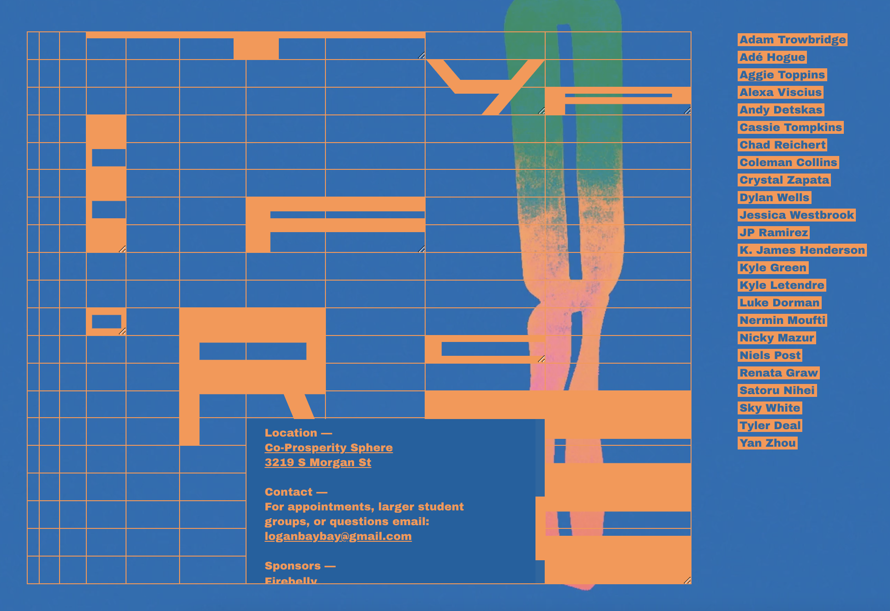
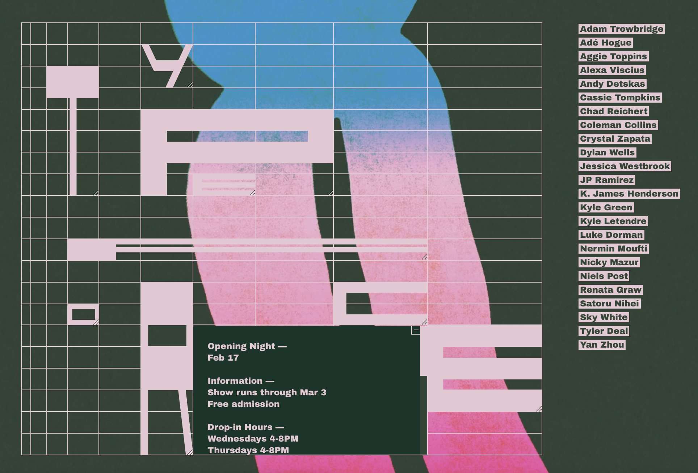
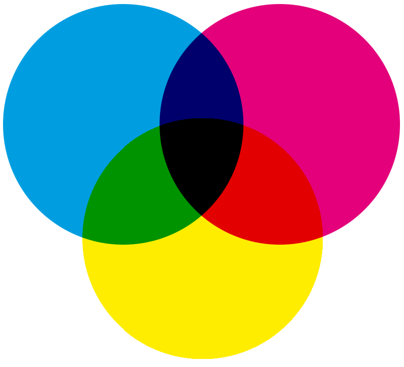

CSS TYPEFACE PROCESS
  The geometric and consistent line width of the letters
in this design inspired my CSS typeface design.
Hand sketches of letters A–I
H–U
V–Z

Used cyan, magenta, and yellow to resemble
the CMYK colour palette.